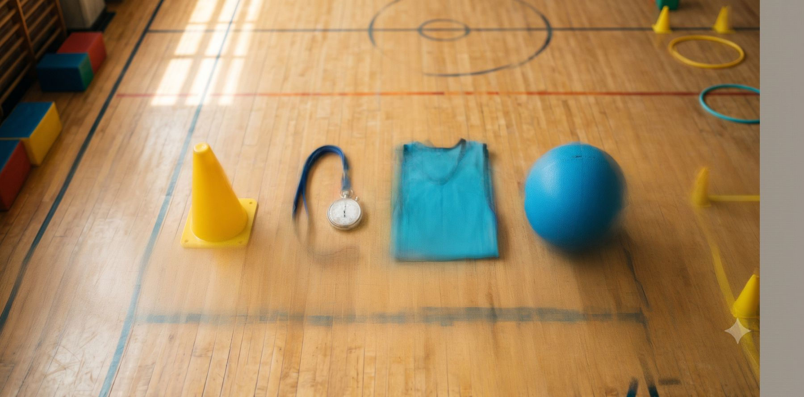
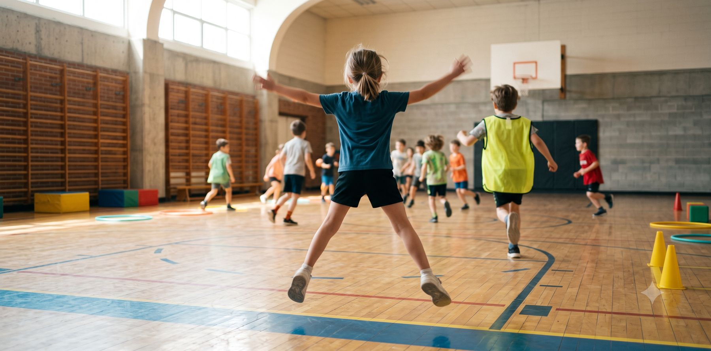
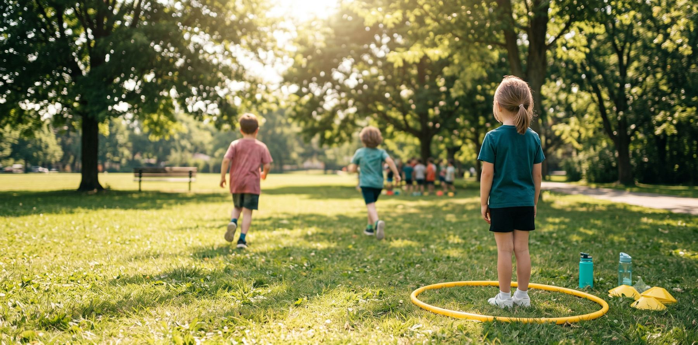
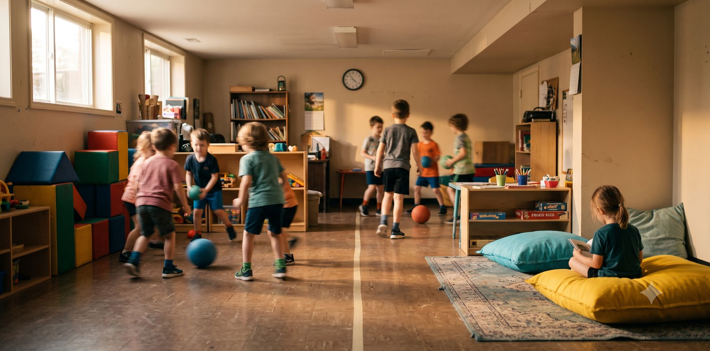
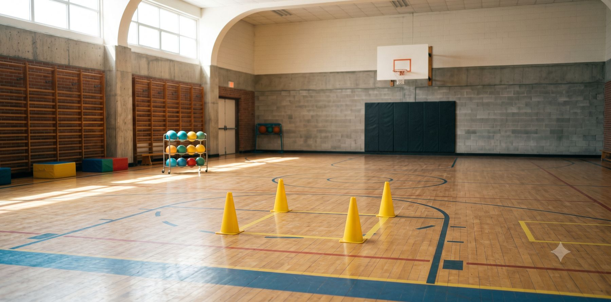

Le moment où j'ai compris que j'adaptais à l'envers
Un mardi de novembre, ballon chasseur, mon groupe de 4e année. Une période ordinaire, un jeu que je sortais depuis des années, rien d'exceptionnel au programme.
Dans ce groupe, j'avais un élève qui ne tolérait pas de se faire viser. Pas « qui n'aimait pas ça » — qui ne tolérait pas. Un ballon qui arrivait vers lui et c'était fini pour la période : il se figeait, il se fâchait, ou il quittait le gymnase. J'avais essayé de le rassurer, j'avais essayé de le placer en arrière, j'avais essayé de demander aux autres de ne pas le viser, ce qui est probablement la pire idée que j'aie eue cette année-là.
Ma solution du moment, celle qui me semblait pleine de bon sens : je l'installe près du mur avec deux ballons et trois cônes, et je lui donne « son » activité. Un défi de précision, avec des points à accumuler. Il avait l'air content. Moi aussi, honnêtement — j'avais l'impression d'avoir réglé quelque chose. Le reste du groupe jouait, lui était occupé, personne ne pleurait. Dans ma tête, c'était une réussite de gestion de classe.
Quatre minutes plus tard, il ne lançait plus. Il était debout, son ballon dans les mains, et il regardait le centre du gymnase. Les autres criaient, se sauvaient, se faisaient sortir, revenaient en riant, se chicanaient sur une touche. Lui, il avait une tâche. Il n'avait pas de jeu.
C'est une image qui ne m'a jamais lâché. Parce que ce qu'il regardait, ce n'était pas le ballon chasseur — le ballon chasseur, il ne le voulait pas. Ce qu'il regardait, c'était le groupe. Et je venais de lui donner une activité qui l'excluait de la seule chose à laquelle il voulait appartenir.
Je venais de fabriquer l'exclusion en pensant faire de l'inclusion. Je n'avais pas adapté le jeu, j'avais retiré l'enfant du jeu.
Ce qui est fâchant, c'est que j'avais fait exactement ce qu'on m'avait montré. Toute ma formation initiale, et à peu près toutes les formations continues que j'avais suivies jusque-là, m'avaient appris à partir de l'élève : identifier ses besoins, puis lui bâtir quelque chose sur mesure. Ça se tient parfaitement sur papier. Ça se tient beaucoup moins bien dans un gymnase de 30 élèves, seul, avec 50 minutes, quatre autres groupes dans ta journée et trois élèves différents qui auraient besoin du même traitement sur mesure.
La semaine suivante, j'ai essayé l'inverse. Même jeu, même groupe, une seule règle changée pour tout le monde : plus personne n'est éliminé, on sort, on fait cinq sauts, on rentre. Je n'avais rien préparé de spécial pour mon élève, je n'avais rien à surveiller, je n'avais rien à expliquer à personne. Il a joué la période au complet. Pas parfaitement — il évitait encore les ballons comme la peste — mais il a joué, avec les autres, dans le même jeu qu'eux.
C'est là que la méthode est née. Avec le temps, je l'ai réduite à quatre leviers, quatre choses seulement que tu peux tourner sur n'importe quelle activité, en moins de dix secondes, sans matériel et sans budget. Je les appelle les 4 boutons.
Ce qui suit, c'est la méthode au complet, puis le même jeu monté de trois façons différentes — au gymnase, au camp de jour et au service de garde — et enfin trente solutions concrètes, dix par métier, à piger dedans selon où tu travailles.
Adapter l'enfant ou adapter le jeu : la bascule
Adapter l'enfant, c'est ce qu'on fait presque tous par réflexe. On repère celui qui va avoir de la misère et on lui bricole quelque chose : une consigne à part, un rôle inventé sur le coup, un coin tranquille. Ça part d'une bonne intention et ça règle la minute qui vient.
Le problème, c'est que ça ne tient pas. Ça coûte du temps que tu n'as pas — trente secondes par enfant, fois trois ou quatre enfants, fois cinq groupes dans ta journée. Ça isole l'enfant, parce qu'il joue à côté et non avec. Et surtout, ça s'écroule dès que tu as le dos tourné : la seule chose qui tenait l'adaptation debout, c'était toi, debout à côté.
Adapter le jeu, c'est une décision, une seule fois, prise avant le coup de sifflet. Tu changes une règle pour tout le monde. Personne ne sait pour qui tu l'as changée, et ça finit par servir à la moitié du groupe : l'enfant anxieux, oui, mais aussi le petit de maternelle en multi-âge, celui qui revient d'une entorse, celui qui a mal dormi.
Ce n'est pas de la théorie inclusive, c'est du design de jeu : tu construis l'activité pour que l'écart d'habiletés ne soit pas une condition de participation. Si tu veux savoir qui, précisément, se cache derrière les besoins de ton groupe, j'ai déjà écrit le détail par code de difficulté MEQ — cet article-ci couvre le comment, celui-là couvre le qui.

Les 4 boutons
On n’adapte pas l’enfant au jeu. On tourne un bouton sur le jeu, et le jeu redevient jouable par tout le monde.
Quatre boutons, applicables à n'importe quelle activité, en moins de dix secondes, sans matériel et sans budget. Ce n'est pas une liste de trucs : c'est une grille. Une fois que tu l'as en tête, tu regardes n'importe quel jeu et tu vois tout de suite lequel des quatre il faut tourner.
| Bouton | Ce que tu tournes | En une phrase |
|---|---|---|
| ZONE | L'espace de jeu | Un endroit où personne ne peut te toucher |
| RYTHME | La durée, les pauses | Des manches courtes avec un arrêt franc |
| RÔLE | Ce que l'enfant fait dans le jeu | Une job réelle, qui tourne à chaque manche |
| RETOUR | Ce qui arrive quand tu sors | Sorti, un mouvement court, tu rentres |
Les quatre sections qui suivent expliquent chacun des boutons en détail : ce qu'il règle, les façons de le tourner, un exemple, le piège classique et le signe que ça fonctionne.
Bouton 1 : ZONE
Tu changes la géographie du jeu. Pas les règles, pas les équipes, pas la durée : l'espace. C'est le bouton le plus sous-utilisé des quatre, parce qu'on pense spontanément à changer des règles avant de penser à changer le terrain.
Ce que ça règle : l'enfant qui ne supporte pas d'être la cible. Celui qui a besoin de sortir du stimulus sans sortir du jeu. Celui qui se fait tasser physiquement par plus gros que lui. Et l'écart d'habiletés, quand tu utilises la distance plutôt que la protection.
Comment tu le tournes : il y a trois façons, et elles ne se ressemblent pas.
- Le refuge. Un espace où personne ne peut te toucher. Tu y entres et tu en sors quand tu veux, sans demander.
- La distance différenciée. Deux lignes de tir, deux cibles de tailles différentes, deux zones de départ. L'écart d'habiletés se règle par la géométrie au lieu de se régler par un handicap imposé à quelqu'un.
- La division du terrain. Tu coupes l'espace en deux et tu attribues chaque moitié à un profil de joueurs. Les grands d'un bord, les petits de l'autre; les rapides d'un bord, les autres de l'autre.
Exemple : tu traces un carré au sol — quatre cônes, un tapis, ou une ligne de basket qui existe déjà. Dans ce carré, personne ne peut te toucher. Tu peux y entrer quand tu veux, tu en ressors quand tu veux. Tu l'annonces au début, en une phrase, pour tout le groupe.
Le piège : ne la nomme jamais par le prénom d'un enfant. Le refuge appartient au jeu, pas à quelqu'un. Le jour où tu l'étiquettes, tu viens de recréer le coin à part avec des cônes plus chics. Deuxième piège, plus subtil : ne commente jamais le fait qu'un enfant l'utilise, même pour l'encourager. Un « c'est bien, tu as pris ta pause » dit devant les autres, et il n'y retourne plus.
Le signe que ça marche : des enfants pour qui tu ne l'avais pas prévu s'en servent. Si seul l'élève ciblé utilise le refuge, il n'est pas devenu une règle du jeu — il est resté ton adaptation, et tout le monde l'a compris.
Bouton 2 : RYTHME
Tu changes le temps. La durée des manches, la présence de pauses, la prévisibilité de la fin. C'est le bouton le plus puissant en fin de journée et par temps chaud, et c'est celui qu'on tourne le moins parce qu'on a l'impression de « perdre du temps de jeu ».
Ce que ça règle : la fatigue. La surcharge sensorielle. L'enfant qui décroche parce que le jeu ne finit jamais. Celui qui a besoin de savoir combien de temps ça dure pour être capable d'endurer. Et, indirectement, les scores irrécupérables qui font décrocher une équipe complète.
Comment tu le tournes :
- Raccourcir les manches. Trois minutes au gymnase, deux minutes en fin de journée. Presque toujours plus court que ton instinct te le dit.
- Rendre la fin visible. Un chrono affiché, un décompte annoncé, un signal connu d'avance. Ce n'est pas la durée qui angoisse, c'est l'incertitude sur la durée.
- Imposer la pause. Assis, cinq à dix secondes, tout le monde, même ceux qui n'en ont pas besoin. Surtout ceux qui n'en ont pas besoin, en fait : c'est ce qui empêche la pause de devenir un signe de faiblesse.
- Remettre les compteurs à zéro. Nouvelle manche, nouveau pointage, nouvelles équipes. Personne ne traîne le résultat de la manche précédente.
Exemple : au lieu d'une partie de dix minutes, des manches de trois minutes avec un arrêt franc. Tout le monde s'assoit, dix secondes, on repart à zéro. Tu perds trente secondes de jeu par manche et tu gagnes la moitié de ton groupe dans les dix dernières minutes.
Le piège : l'arrêt doit être franc. Un « bon, on continue encore un peu » et tu perds tout — l'enfant qui tenait le coup parce qu'il comptait sur la fin apprend que ta parole ne vaut rien, et il ne te fera plus confiance la fois d'après. Si tu annonces trois minutes, c'est trois minutes, même si ça joue bien. Surtout si ça joue bien.
Le signe que ça marche : les questions du type « c'est quand qu'on finit ? » disparaissent, et ta dernière manche est aussi bonne que ta première.
Bouton 3 : RÔLE
Tu changes ce que l'enfant fait à l'intérieur du jeu. Il ne sort pas de l'activité, il y participe autrement. C'est le bouton le plus mal utilisé des quatre, parce que c'est celui qui ressemble le plus à une punition déguisée quand on le tourne mal.
Ce que ça règle : l'enfant qui ne veut pas jouer aujourd'hui. Celui dont l'écart d'habiletés est trop grand pour que le jeu ait encore du sens. Celui qui revient d'une blessure. Celui qui vient d'arriver dans le groupe. Celui qui a besoin de bouger moins mais d'appartenir autant.
Comment tu le tournes :
- Le rôle d'autorité. Arbitre de zone, juge de ligne, gardien des règles. À donner en priorité à l'enfant qui a l'habitude d'être celui qu'on corrige — l'effet est spectaculaire.
- Le rôle logistique. Distributeur de ballons, ramasseur, gardien du chrono, responsable du pointage. Une porte d'entrée sans exposition pour celui qui n'est pas prêt à jouer.
- Le rôle d'accompagnement. Parrain d'un plus jeune, partenaire d'un nouveau. Ça occupe celui qui trouve le jeu trop facile et ça sécurise celui qui le trouve trop dur, d'une seule décision.
Exemple : deux élèves par équipe ont une job à chaque manche — un ramasseur, un juge de ligne. Le rôle change à la manche suivante, tout le monde y passe au cours de la période.
Le piège : un rôle qui ne tourne pas, c'est une tablette. Si c'est toujours le même enfant qui arbitre, le groupe comprend en douze secondes que « arbitre » veut dire « celui qui ne sait pas jouer ». Deuxième piège : le rôle doit être réellement utile. Un enfant sait très bien faire la différence entre une vraie responsabilité et une job inventée pour l'occuper, et il te méprisera un peu pour la deuxième.
Le signe que ça marche : des enfants te demandent le rôle. Si personne ne le réclame jamais, c'est qu'il est perçu comme une consolation.
Bouton 4 : RETOUR
Tu changes ce qui arrive quand un enfant est sorti du jeu. C'est le bouton le plus rentable des quatre, et de loin — c'est celui par lequel je te conseille de commencer si tu n'en essaies qu'un seul.
Ce que ça règle : l'élimination, le vrai poison des jeux de gymnase. Ceux qui ont le plus besoin de bouger sont les premiers sortis, et ils passent la période assis. Tu les as choisis comme cibles sans le vouloir, en gardant une règle que personne n'a jamais remise en question.
Comment tu le tournes :
- Le retour par le mouvement. Sorti, un mouvement court, tu rentres. Cinq sauts, un tour de zone, dix cordes à sauter.
- Le retour par la tâche. Sorti, tu ramasses un ballon et tu le remets en jeu, tu rentres.
- Le retour par le pair. Sorti, tu attends qu'un coéquipier vienne te toucher, vous rentrez à deux. Celui-là ajoute de la coopération sans que tu aies eu à faire un discours sur la coopération.
- La sortie qui n'existe pas. Certains jeux n'ont pas besoin de sortie du tout : touché, tu perds un point, tu continues.
Exemple : tu es touché, tu vas dans la zone de retour, tu fais cinq sauts, tu rentres. Personne ne reste dehors plus de vingt secondes.
Le piège : jamais de punition physique. Un « vingt push-ups et tu rentres » transforme ton outil d'inclusion en conséquence, et l'enfant le moins fort du groupe reste dehors le plus longtemps — soit exactement l'inverse de ce que tu cherchais. Le mouvement de retour doit être court, faisable par le plus faible du groupe, et jamais humiliant. J'en parle aussi dans mon article sur les comportements perturbateurs : un enfant assis contre son gré, c'est un problème de comportement en train de se préparer.
Le signe que ça marche : personne ne demande plus « est-ce qu'on est éliminé ? » avant de commencer. Et ton banc est vide.
Quels deux boutons tourner ?
Tu n'as pas besoin des quatre en même temps. Regarde ce qui fait décrocher ton groupe et pars de là. Si le problème c'est le banc, tu tournes RETOUR. Si c'est le contact et la peur, tu tournes ZONE. Si c'est la fin de journée, la chaleur ou la surcharge, tu tournes RYTHME. Si c'est un enfant qui ne peut pas suivre l'activité aujourd'hui, tu tournes RÔLE.
Deux boutons maximum par activité, et tu les annonces au groupe avant de commencer, pas en cours de route. Une règle changée avant le coup de sifflet, c'est le jeu. La même règle changée pendant la partie, c'est une faveur — et les enfants font très bien la différence entre les deux.
À imprimer La grille des 4 boutons
Une page, quatre leviers. Colle-la sur la porte du local à matériel.
| Bouton | Ce que tu tournes | Ta version en 10 secondes |
|---|---|---|
| ZONE | L'espace de jeu | Un carré refuge : personne ne peut t'y toucher, tu entres et sors quand tu veux. |
| RYTHME | La durée, les pauses | Manches de 3 minutes, arrêt franc, tout le monde s'assoit 10 secondes. |
| RÔLE | Ce que l'enfant fait | Une job réelle par manche : ramasseur, juge de ligne, chrono. Ça tourne. |
| RETOUR | Ce qui arrive quand tu sors | Touché, 5 sauts derrière la ligne, tu rentres. Personne ne reste dehors. |
Deux boutons maximum par activité, annoncés avant le coup de sifflet.
Interactif Quel est ton problème, là, maintenant ?
Clique sur ta situation. Je te dis quels deux boutons tourner.
Tourne ces deux boutons :
Le test : un ballon chasseur, trois terrains
J'aurais pu prendre un jeu doux pour ma démonstration. J'ai pris le pire cas exprès : le ballon chasseur classique. Deux camps, une ligne au centre, des ballons, tu es touché tu es sorti. Élimination, ballons qui montent trop haut, écart d'habiletés brutal, et les mêmes enfants sur le banc à chaque fois.
Si les quatre boutons tiennent là, ils tiennent partout. Même jeu de départ dans les trois cas, trois contextes, deux boutons tournés par contexte.

Interactif Monte ton ballon chasseur
Pars du jeu brut et tourne les boutons. La fiche de règles se réécrit en direct.
Ta fiche de règles
Version gymnase
Contexte : prof d'ÉPS, 30 élèves, période de 60 minutes, matériel disponible. Boutons tournés : RETOUR + RÔLE.
Le RETOUR d'abord, parce que c'est lui qui change tout. Personne n'est éliminé : quand tu es touché, tu vas derrière la ligne de fond de ton camp, tu fais cinq sauts étoile, tu rentres. La partie ne s'arrête jamais, le temps d'engagement moteur reste haut, et l'élève qui se fait sortir en huit secondes ne perd pas sa période.
Le RÔLE ensuite. Deux élèves par camp ont une job à chaque manche : un ramasseur qui alimente son équipe en ballons depuis l'arrière, un juge de ligne qui tranche les touches contestées. Ça tourne à chaque manche, et les deux rôles sont réellement utiles — c'est ce qui les rend prenables sans honte.
Côté PFEQ, c'est le seul volet où je parle d'évaluation, parce que c'est le seul où tu as un bulletin à remplir. Le juge de ligne te donne de l'observable direct sur le respect des règles et l'esprit sportif, et le format sans élimination te laisse voir chaque élève assez longtemps pour juger de l'efficacité de son exécution. Un élève sorti à la troisième minute, tu n'évalues rien avec ça.
Pour d'autres jeux montés sur le même principe, la Zone en a 1 439 jeux filtrables — filtre Coopératifs et Sans matériel. Et si tu es en groupe double, j'ai écrit ailleurs ce qui change quand le groupe dépasse 40.

Version camp de jour
Contexte : animateur, 25 enfants, dehors, zéro préparation, pas de dossier d'enfant, formation de trois jours. Boutons tournés : ZONE + RYTHME.
L'animateur ne sait pas qui a un diagnostic, et ce n'est pas son travail de le deviner. On tourne donc les deux boutons qui n'exigent aucune information sur l'enfant.
La ZONE : deux arbres, un banc, un cerceau posé au sol — tu déclares que c'est l'îlot. Sur l'îlot, tu es intouchable, mais tu ne peux pas lancer. Dix secondes maximum, l'animateur compte à voix haute. L'enfant qui a besoin de se retirer se retire tout seul, sans demander, sans que personne ne le remarque.
Le RYTHME : manches de trois minutes. Coup de sifflet, tout le monde s'assoit où il est, cinq secondes, on repart avec les camps mélangés. Le mélange règle un deuxième problème gratuitement : la partie ne devient jamais « les forts contre les autres ».
Note pour les coordos : ces deux boutons se briefent en cinq minutes à l'accueil du matin. C'est le seul format que j'ai vu tenir avec une équipe formée en trois jours — pas parce que tes animateurs sont mauvais, mais parce qu'une consigne qui demande du jugement clinique ne survit pas à la troisième semaine de juillet.

Version service de garde
Contexte : éducateur, groupe multi-âge, local réduit, plafond bas, 15 h 30. Boutons tournés : RYTHME + ZONE.
À 15 h 30, tu n'as ni l'espace du gymnase ni l'énergie du matin. Tu as des maternelles et des 6e année dans la même pièce, cinq ans d'écart, et un plafond qui interdit tout ce qui monte.
Le RYTHME d'abord, et il est plus court qu'ailleurs : manches de deux minutes, pause assise obligatoire entre chaque. La pause n'est pas du temps perdu, c'est ce qui rend la troisième manche possible. Ballons en mousse seulement, lancers sous la taille, règle unique et non négociable — ça règle le plafond et les visages en même temps.
La ZONE ensuite, version division de l'espace : tu coupes le local en deux avec du ruban ou une rangée de chaises. Les grands lancent depuis la zone éloignée, les petits depuis la zone rapprochée. Personne n'a besoin d'expliquer pourquoi, et l'écart de cinq ans arrête d'être une injustice permanente.
Ajoute un coin calme au fond, deux coussins. Pas comme punition — comme partie du jeu. Tu y vas, tu reviens quand tu veux. En fin de journée, la moitié du groupe s'en sert au moins une fois, et c'est exactement le signe que ça fonctionne.
Ta trousse, selon ton métier
Le ballon chasseur, c'était la démonstration. Voici maintenant le contenu de ta trousse : dix solutions par métier, toutes applicables sans budget et sans matériel spécial.
Chacune est présentée de la même façon — le contexte réel où ça se produit, le problème que ça cause, puis la ou les solutions. Et chacune indique le bouton qu'elle tourne, pour que tu voies que ce n'est jamais une astuce isolée : c'est toujours le même cadre appliqué à un contexte différent.
Ouvre celle qui te concerne. Tu peux aussi lire les deux autres : c'est souvent chez le voisin qu'on trouve l'idée qui manque.
Clique sur l'un des boutons ci-dessus pour révéler les 10 solutions.
10 Ta trousse ÉPSGymnase · 25 à 35 élèves · bulletin à remplir
1Le retour actif universelRETOUR
Contexte : jeudi matin, jeu d'élimination classique, 28 élèves, 50 minutes effectives une fois les transitions enlevées.
Problème : les trois premiers sortis sont presque toujours les mêmes, et ce sont ceux qui ont le plus besoin de bouger. À la douzième minute, ils sont assis contre le mur. À la quinzième, ils dérangent — et tu passes le reste de la période à gérer un problème que tes propres règles ont créé.
Solution : aucun jeu ne se termine par « tu es sorti ». Touché, tu vas à la ligne de fond, cinq sauts, tu rentres. Applique-le à tous tes jeux d'un coup plutôt qu'à un seul : les élèves cessent de demander « est-ce qu'on est éliminé ? » et tu récupères deux minutes de consignes par période.
2La ligne de tir reculéeZONE
Contexte : n'importe quel jeu de lancer ou de viser, groupe de 4e ou 5e année, écart d'habiletés normal pour l'âge.
Problème : quatre ou cinq élèves dominent l'activité au complet. Les autres ne touchent presque jamais au ballon. Et si tu handicapes les forts en les nommant, tu crées un sentiment d'injustice qui va te suivre jusqu'à la fin du cycle.
Solutions : trace une deuxième ligne, deux mètres derrière la première, et annonce qu'un lancer réussi de cette ligne vaut deux points. Tu n'assignes personne : les forts s'y déplacent tout seuls, par appât du gain. Variante pour les jeux de précision : deux cibles, une grosse et une petite, la petite vaut double.
3Le juge de zone tournantRÔLE
Contexte : matchs en sous-groupes sur trois terrains simultanés. Tu es seul et tu ne peux pas être partout.
Problème : les contestations ne s'arrêtent jamais, et chaque fois que tu tranches à distance, tu as tort une fois sur deux. Pendant ce temps, l'élève blessé, l'élève qui refuse de jouer et celui qui a oublié son costume regardent le plafond.
Solution : un élève par terrain tranche les touches contestées, avec un dossard pour être visible de loin. Le rôle change à chaque manche, tout le monde y passe. Tu élimines les trois quarts de tes arbitrages, et tu observes du comportement social réel au lieu de le déduire.
4Le chrono affichéRYTHME
Contexte : période de 60 minutes, groupe qui compte des élèves anxieux ou avec un TDAH.
Problème : « c'est quand qu'on finit ? » vingt fois par période. Pire : l'élève anxieux qui ne sait pas quand ça arrête n'embarque jamais complètement, parce qu'une partie de sa tête est occupée à surveiller la fin.
Solutions : un chrono projeté ou écrit au tableau, visible de partout, et tu ne réponds plus jamais à la question — tu pointes. Applique le même principe aux transitions : trente secondes affichées pour ranger, et le rangement arrête d'être une négociation.
5Les équipes qui se refont à chaque mancheRYTHME
Contexte : jeu en deux camps, format tournoi ou match continu.
Problème : au bout de six minutes, l'écart de score est irrécupérable et le camp perdant décroche au complet. Et si les équipes tiennent toute la période, un élève devient officiellement « le boulet de l'équipe rouge » pendant 50 minutes.
Solution : nouvelle manche, nouvelles équipes, en changeant les dossards. Jamais par un choix de capitaines — jamais, quel que soit ton groupe et quelle que soit ta confiance en eux. Deux élèves passent le pire moment de leur semaine à chaque fois que tu le fais.
6Le signal de sortie non verbalZONE
Contexte : élève TSA ou anxieux, gymnase à l'acoustique dure, activité bruyante.
Problème : demander une pause devant 28 personnes, c'est ne jamais demander. L'enfant endure, puis endure encore, et la crise arrive avant la demande. Tu te retrouves à gérer une explosion que tu aurais pu éviter pour trois secondes.
Solution : main à plat au-dessus de la tête, ça veut dire « je vais au refuge ». Pas de demande, pas de justification, pas de négociation. Tu l'enseignes une fois en septembre, à tout le groupe. Il sert toute l'année, et il finit par servir à des élèves pour qui tu ne l'avais pas prévu.
7La consigne en deux canauxaccessibilité de base
Contexte : explication du jeu en début de période, groupe assis, écho du gymnase.
Problème : tu répètes quatre fois, tu perds cinq minutes, et il reste toujours deux ou trois élèves qui partent dans la mauvaise direction. Ce n'est pas de la mauvaise volonté : l'oral seul ne passe pas pour l'élève qui a un trouble du langage, celui qui arrive de l'accueil linguistique et celui qui a la tête ailleurs.
Solution : une phrase courte, puis une démonstration silencieuse de dix secondes. Jamais l'un sans l'autre. Fais faire la démo par un élève pendant que tu te tais — ça règle en plus le problème du prof qui parle 70 % de la période.
8Le matériel à deux vitessesZONERÔLE
Contexte : jeux de ballon au premier cycle, où la peur du ballon est fréquente et rarement avouée.
Problème : si tu donnes un ballon en mousse à un élève en particulier, tu viens de l'étiqueter devant tout le monde. S'il n'en a pas, il joue avec les mains dans le visage et il n'apprend rien.
Solution : deux paniers de ballons, mousse et standard, et chacun choisit avec quoi il joue. Le choix étant offert à tous, personne n'est identifié. Ne commente jamais le choix d'un élève, même pour l'encourager — c'est exactement ce qui casse le mécanisme.
9La règle des trois touchesRYTHME
Contexte : jeux d'invasion — ballon-panier, hockey cosom, ultimate.
Problème : deux élèves gardent le ballon toute la partie. Les autres courent en décor. Et au bulletin, tu n'as rien d'observable sur la coopération, parce qu'il n'y en a pas eu.
Solutions : trois passes obligatoires avant de marquer. Ça casse le monopole et ça force la participation. Variante plus forte pour les groupes très inégaux : chaque membre de l'équipe doit avoir touché au ballon avant le but. Bonus : ta règle d'inclusion devient directement ta situation d'évaluation pour la compétence Interagir.
10Le retour au calme identique à chaque coursRYTHME
Contexte : les cinq dernières minutes, avant le retour en classe.
Problème : une fin floue donne une fin agitée, et tu remets au titulaire un groupe survolté. Pour certains élèves, c'est pire : l'imprévisibilité de la fin les préoccupe pendant toute la période.
Solution : même endroit, même durée, même consigne, du premier au dernier cours de l'année. Trois minutes assis en cercle. C'est la prévisibilité de la fin qui permet à certains élèves d'endurer l'imprévisibilité du milieu.
10 Ta trousse service de gardeMulti-âge · local réduit · 15 h 30
1Le sas d'arrivéeRYTHME
Contexte : 15 h 05, les enfants entrent au local par vagues, après six heures de classe.
Problème : tu lances ta consigne de groupe et personne n'écoute. Tu répètes, tu montes le ton, et tu viens de commencer ta journée en mode gestion. Un enfant qui sort de six heures de classe n'est tout simplement pas disponible pour une consigne collective.
Solution : les cinq premières minutes, aucune consigne de groupe. Matériel accessible, activité libre calme, et toi tu accueilles un par un. Les cinq minutes que tu investis là, tu les récupères en triple sur le reste de la journée.
2Le menu à deux choixRÔLE
Contexte : l'activité dirigée de fin de journée, celle que tu as préparée.
Problème : refus, opposition, négociation. Ce n'est pas ton activité qui est mauvaise : l'enfant suit les décisions des autres depuis huit heures du matin, et il te le fait payer parce que tu es le dernier adulte de la file.
Solutions : jamais une activité imposée, jamais dix options non plus. Deux choix affichés, l'enfant tranche. S'il refuse les deux, offre-lui de choisir pour le groupe à la prochaine période — tu transformes l'opposition en responsabilité au lieu d'en conflit.
3La division du local par distance de lancerZONE
Contexte : groupe multi-âge de la maternelle à la 6e année, jeu de lancer dans un local ordinaire.
Problème : les grands dominent tellement que les petits arrêtent d'essayer au bout de deux minutes. Et la seule façon de rééquilibrer semble être de dire à voix haute que les petits sont moins forts.
Solution : une ligne de ruban au sol ou une rangée de chaises. Les grands lancent depuis la zone éloignée, les petits depuis la zone rapprochée. C'est une règle d'espace, pas un jugement sur les personnes, et personne n'a besoin d'expliquer pourquoi.
4Manches de deux minutes, pause assise obligatoireRYTHME
Contexte : 15 h 45, dans le local, groupe déjà entamé par la journée.
Problème : la première manche va bien, la deuxième est correcte, la troisième dégénère. Tu conclus que le jeu ne fonctionne pas, alors que c'est la durée qui ne fonctionne pas.
Solution : manches de deux minutes — plus court qu'au gymnase, parce que le réservoir est plus bas — avec pause assise obligatoire entre chaque. La pause n'est pas du temps perdu : c'est elle qui rend la troisième manche possible au lieu de finir en dégât à 16 h 10.
5Le coin calme sans permissionZONE
Contexte : local fermé, écho, 25 enfants, et au moins deux qui ne tolèrent pas ce niveau de bruit.
Problème : si l'accès au coin calme demande ta permission, il devient une punition dans la tête du groupe. Et l'enfant qui en aurait besoin ne demandera pas, parce que demander, c'est s'afficher.
Solution : deux coussins au fond, accessibles en tout temps, sans demander. On y va seul, on y reste le temps qu'on veut, on revient quand on veut. Le jour où tu exiges une permission, tu perds l'outil pour de bon.
6Le travail lourdRÔLE
Contexte : l'enfant qui n'arrête pas, avant ou pendant l'activité.
Problème : lui demander de se calmer ne marche pas, et le retirer non plus. Ce qu'il cherche, c'est de la pression et de la résistance — pas de l'attention.
Solutions : empiler les chaises, transporter les tapis, pousser le bac de matériel. Pousser et porter du poids régule le système nerveux mieux que n'importe quelle consigne verbale. Deux conditions : présente-le comme un privilège, jamais comme une conséquence, et donne-le avant la crise, pas après.
7Le grand parrainRÔLE
Contexte : groupe multi-âge, un 6e année dans une activité conçue pour la moyenne du groupe.
Problème : le grand s'ennuie et il sabote — pas par méchanceté, mais parce que saboter est plus intéressant que ce que tu lui offres.
Solution : il devient responsable d'un petit pendant l'activité. Le grand a un défi à sa hauteur, le petit a un adulte de secours à hauteur d'enfant, et toi tu as un problème de moins. À réserver aux volontaires et à faire tourner, sinon ça devient une corvée.
8La version assise du jeuZONERYTHME
Contexte : jour de pluie, local trop petit, plafond bas, gymnase déjà occupé.
Problème : tu changes d'activité, tu réexpliques tout, et tu perds dix minutes à faire comprendre un nouveau jeu à un groupe qui n'a plus la patience d'écouter.
Solution : chaque jeu de ta banque devrait avoir une variante assise ou à genoux. Tu ne changes pas d'activité, tu changes de posture. Les enfants gardent le jeu qu'ils connaissent, et la version assise règle en prime le problème du plafond bas.
9Le compte à rebours chuchotéRYTHME
Contexte : fin d'activité, volume au maximum, il faut arrêter le jeu.
Problème : crier par-dessus 25 enfants fait monter le volume au lieu de le baisser — ils s'ajustent à toi. Et en novembre, tu n'as plus de voix.
Solution : un compte à rebours de plus en plus bas : « cinq… quatre… trois… ». Le groupe baisse pour t'entendre. Tu obtiens le silence sans jamais crier, et tu finis ton année avec une voix.
10La fermeture toujours pareilleRYTHME
Contexte : 17 h, les parents arrivent au compte-gouttes, le groupe fond.
Problème : chaque départ relance le groupe, et tu recommences ton animation quatre fois. Les derniers enfants, ceux qui restent jusqu'à 18 h, sont ceux qui vivent la période la plus décousue de la journée.
Solution : même chanson, même rangement, même position, même ordre, tous les jours. À 17 h, ce n'est pas ta créativité qui tient le groupe, c'est ta routine. Ne change ta fermeture qu'aux retours de longues vacances, jamais en pleine semaine.
10 Ta trousse camp de jourDehors · 25 enfants · zéro préparation
1L'îlot annoncé au premier jeu du matinZONE
Contexte : lundi matin, semaine 1, tu ne connais aucun enfant et tu n'as aucune information sur eux.
Problème : le premier enfant qui décroche va le faire à la vue de tous, et si tu improvises un endroit où l'envoyer à ce moment-là, tout le groupe comprend que cet endroit est pour lui.
Solution : deux arbres, un banc, un cerceau — tu déclares l'îlot dès le premier jeu, avant que quiconque en ait besoin. Dix secondes maximum, intouchable, mais on ne lance pas de là. Annoncé d'avance, c'est une règle du jeu. Annoncé pendant une crise, c'est une intervention.
2Les camps qui se mélangent à chaque mancheRYTHME
Contexte : grand jeu extérieur, 25 enfants séparés en deux camps.
Problème : l'équipe qui perd décroche au complet, et un enfant se fait coller une réputation le lundi qui va le suivre jusqu'au vendredi. Dans un camp, cinq jours, c'est une éternité.
Solution : trois minutes, coup de sifflet, on refait les camps. Personne ne reste dans l'équipe perdante et personne ne construit une réputation. En prime, ça règle les disputes de composition d'équipe avant qu'elles commencent.
3Trois règles maximumaccessibilité de base
Contexte : explication du jeu, debout au soleil, 25 enfants de 6 à 12 ans.
Problème : ton explication dépasse trois règles, et l'enfant qui a de la difficulté à retenir décroche avant même le début. Il ne joue pas mal : il n'a pas compris à quoi il joue.
Solutions : explique trois règles, pars le jeu, ajoute la quatrième à la deuxième manche. Ça s'appelle empiler les règles et ça sauve la moitié de tes explications. Si ton jeu ne peut vraiment pas démarrer en trois règles, fais une manche d'essai sans pointage.
4L'habillage narratifRÔLE
Contexte : l'enfant qui t'annonce le premier jour qu'il déteste le sport.
Problème : tu vas passer ta semaine à le convaincre, et tu vas perdre. Ce qu'il refuse, ce n'est presque jamais le mouvement — c'est la performance et le jugement qui viennent avec.
Solution : le même ballon chasseur devient une mission, une chasse, une évasion. Change les mots, garde le jeu. Tu serais étonné du nombre d'enfants « qui n'aiment pas le sport » qui courent à fond quand ça s'appelle autrement.
5La participation périphériqueRÔLE
Contexte : un nouvel enfant arrive le mercredi, dans un groupe déjà soudé depuis lundi.
Problème : si tu le pousses à jouer tout de suite pour « l'intégrer », il refuse, il s'installe dans le refus, et il ne jouera plus de la semaine.
Solution : compter les points, tenir la corde, garder le chrono, distribuer les ballons. Une porte d'entrée par la marge, sans exposition. Laisse-lui deux ou trois activités comme ça et il va entrer dans le jeu de lui-même — c'est presque toujours ce qui arrive.
6Le signal main sur la têteZONE
Contexte : ton animateur n'a aucun dossier d'enfant et aucune formation clinique. Il ne saura pas qui a un diagnostic, et ce n'est pas son travail de le deviner.
Problème : on lui demande implicitement de repérer les besoins particuliers à l'œil. Il va se tromper de cible, ou intervenir trop tard.
Solution : un code discret pour « je suis à bout, j'ai besoin d'une pause », enseigné à tout le groupe le lundi matin. L'animateur n'a plus rien à deviner, parce que l'enfant peut le dire lui-même, sans mots et sans public.
7Le buddyRÔLE
Contexte : déplacements, sortie, piscine, tout ce qui demande de compter les enfants.
Problème : la formation des duos est le pire moment de la journée pour l'enfant que personne ne choisit. Et ce n'est jamais un enfant différent d'une fois à l'autre.
Solution : chaque enfant a un partenaire attribué le matin, réattribué le lendemain. Personne ne choisit, donc personne n'est choisi en dernier. Ça règle tes décomptes et ça règle la blessure du même coup.
8Manches courtes et eau obligatoireRYTHME
Contexte : 14 h, juillet, plein soleil, terrain sans ombre.
Problème : les comportements se dégradent tous en même temps et tu conclus que le groupe est difficile cet après-midi. Souvent, ce ne sont pas des comportements : ce sont des enfants surchauffés et déshydratés.
Solution : dehors en juillet, le RYTHME n'est plus une adaptation, c'est de la sécurité. Manches courtes, gorgée d'eau imposée entre chaque — imposée, pas offerte — et pause à l'ombre plutôt qu'au soleil. Vérifie ça avant de conclure quoi que ce soit sur ton groupe.
9La version sans courseZONERYTHME
Contexte : l'enfant asthmatique, celui qui a une entorse, celui qui a trop chaud, celui qui est essoufflé et gêné de le montrer.
Problème : pour ne pas courir, il doit demander une dispense devant le groupe. Il ne le fera pas. Il va forcer, et tu vas te ramasser avec un incident.
Solution : annonce d'avance que chaque jeu a une version marche seulement, et que n'importe qui peut la choisir en cours de route, sans le dire. Ça ne demande aucune information médicale et ça évite la conversation gênante.
10Le briefing de cinq minutespour les coordos
Contexte : équipe formée en trois jours, roulement de personnel, animateurs de 17 ans.
Problème : la formation théorique sur l'inclusion ne survit pas à la troisième semaine de juillet. Ce qui reste en tête à ce moment-là, c'est ce qui tient sur une feuille.
Solution : ne forme pas ton équipe en trois heures de théorie. Donne-lui les quatre boutons sur une page et exige deux boutons par jeu, écrits dans la planification du matin. Une consigne qui demande du jugement clinique ne tient pas. Une consigne qui demande de tourner deux boutons, oui.

Ce que tu fais lundi
Trois gestes, pas dix.
Premier geste : prends ton jeu le plus utilisé, celui que tu sors quand il te reste douze minutes, et enlève l'élimination. Remplace-la par un retour de cinq secondes. Un seul bouton, sur ton jeu le plus fréquent — c'est là que le rendement est le meilleur.
Deuxième geste : décide de ta zone refuge avant la période, pas pendant. Quatre cônes dans un coin, nommés en une phrase au début du cours, pour tout le groupe. Si tu attends la crise pour l'installer, elle devient une conséquence au lieu d'une option.
Troisième geste : ne tourne jamais plus de deux boutons à la fois. Quatre changements d'un coup, ton groupe ne comprend plus le jeu et tu vas conclure que la méthode ne marche pas. Prends-en une seule dans la trousse de ton métier, pas les dix.
Tu ne rendras pas ton gymnase parfaitement inclusif lundi matin. Mais tu peux faire en sorte que plus personne ne passe sa période assis sur le banc, et c'est déjà la moitié du travail.
Tu aimes Zone Total Sport ?
100 % gratuit, propulsé par la passion. Un petit don aide à garder tout le contenu accessible aux profs d'éduc.
Faire un don